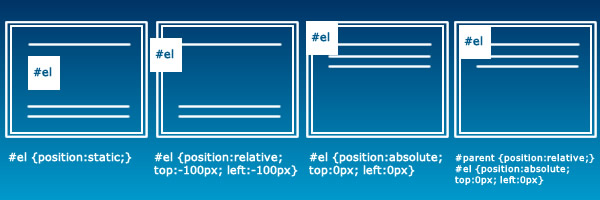
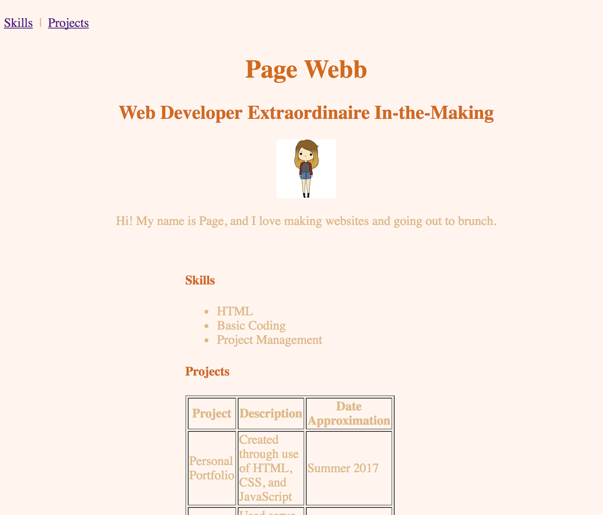
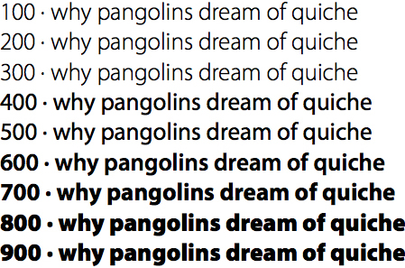
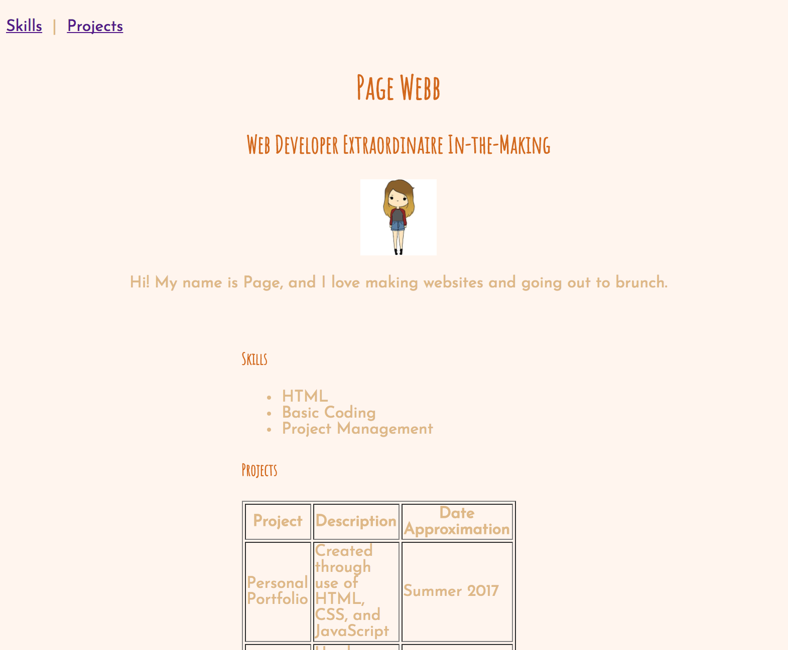

[Home](index.html)
## Structure, Style, Starter Code: Part Two
[<< Previous Lesson](lesson-htmlcss-1.html)&nbsp;&nbsp;|&nbsp;&nbsp;[Next Lesson >>](lesson-htmlcss-3.html)
### CSS: Clearly Stylish? Surely.
> "CSS is not a trivial technology to learn, there are literally 100s of
> properties to master and many of the usage of many of these properties is
> not straight forward."
>
> <span style="color:grey">- Professor Thomas Powell, UCSD</span>
Now that we have a white-and-black form standing before us, it'd probably be in our best interest to clothe and align the poor thing. More than that, we want to make it the belle of the ball - would you rather engage the white t-shirt blue jeans flavor of your content or something wrapped in a Versace gown?
**CSS** or **Cascading Style Sheets** allow you to swathe your humbly structured content in the vestments of your wildest dreams - as long as you know what you're doing. In taking down the analogy a notch, CSS also lets you do all the basic necessities of formatting a webpage: positioning elements, changing font and color, and adding spacing and borders between elements so that they don't cluster or overlap.
It probably goes without saying: if HTML is the skeletal structure of your webpage, CSS is the makeup, the clothing, the *aesthetic* of your site.
<br><span style="color:grey">Source: [The Blog Market](http://www.theblogmarket.co/intro-to-css-why-you-should-use-it/)</span>
####Concepts
* ["Cascading" - What's that All About?](#cascade)
* [Selectors](#selectors)
* [Applying CSS to your HTML Document](#exinternal)
* [Padding and Borders and Margins, Oh My!](#pbm)
* [Fontastic Beasts, and How to Make Them](#fonts)
___
<a name="cascade"></a>
#### "Cascading" - What's that All About?
Recalling *block* and *inline* elements from the previous HTML lesson, recognize that the first rule of CSS is as follows:
> EVERYTHING CASCADES.
>
> All the rules of the highest block cascade until another later rule
> overrides it (ie. when a block element is hit). Then the rules of the body
> or the rules specified for that element apply.
If, for example, I wanted to emphasize the word "CSS" inside the paragraph &lt;p&gt;CSS is not a trivial technology to learn&lt;/p&gt; by changing it to the color red, I would simply do the following:
```
<p> <span style="color:red">CSS</span> is not a trivial technology to learn</p>```
If I wanted to change the rest of the paragraph's text to a more muted color while keeping emphasis on the word "CSS", I could do so as well.
```
<p style="color:grey"> <span style="color:red">CSS</span> is not a trivial technology to learn</p>```
Try it out in practice [here](https://www.w3schools.com/code/tryit.asp?filename=FJOBT12AA066).
Basically, all the style rules applying to the specific paragraph tags apply to everything within them *until* the first block element is hit, which, in this case, is the span tag enveloping "CSS". If no rules were defined for the paragraph tags, all the rules applying to the overarching body tags would apply instead.
___
<a name="selectors"></a>
#### Selectors
CSS cannot exist without pre-existing HTML. All styling can only be applied to content that has already been surrounded with tags.
<img src="images/selector.png" alt="Selector">
<br><span style="color:grey">Source: w3schools</span>
There are three *selectors* CSS styling can be applied to:
1. **element**: This is inclusive of all HTML tags such as &lt;h1&gt; and &lt;p&gt;. An example of this is as follows:
```
p {
color: red;
text-align: center;
} ```
2. **id**: This selector uses the id attribute of an HTML element to select a specific element. The id of an element should be the only one of its kind on a page, so any styling applied to this selector can only be applied to one element. To select an element with a specific id, preface the id name with a hash (#) character.
```
#para1 {
text-align: center;
color: red;
}```
3. **class**: This selector selects elements with a specific class attribute. The class of an element can be applied to any number of elements. To select elements with a specified class, preface the id name with a period (.) character.
```
.center {
text-align: center;
color: red;
}```
You can also group any selectors with the same properties like so:
```
p, #para1, .center {
text-align: center;
color: red;
}```
Knowing how and when to use selectors is a great way to save yourself work in CSS, since you can control the layout of multiple webpages and a lot of the code can be reused across multiple sections.
___
<a name="exinternal"></a>
#### Applying CSS to your HTML Document
CSS can be applied to a document in a number of ways, namely as *inline CSS*, through an *internal stylesheet*, or through an *external stylesheet*. The means of application should be a direct factor of **(1)** whether the same styling will be used again and **(2)** whether the applied styling will affect code readability (and by association, writeability).
1. **Inline CSS** is applied directly to a single HTML element.
This method is the most direct application and works out great if you want to style a single element. However, it is not ideal in most cases, as it creates additional clutter in your HTML code and is harder to locate and maintain. The two following methods are often seen as better coding practice.
2. **Internal Stylesheets** can be created within the HTML doc itself by inserting &lt;style&gt; tags.
<img src="images/internal-stylesheet.png" alt="internal stylesheet">
This method allows you to work in the same file, but can have drawbacks if your file gets lengthy and readability is affected. Internal Stylesheets are often placed within the &lt;head&gt; tags of the file (the brain of the page!).
3. **External Stylesheets** are separate CSS files (.css) that can be linked to within the &lt;head&gt; of an HTML document.
<img src="images/external-link.png" alt="external link">
This file cannot contain any HTML code, and can be commented upon using the "/\*" and "\*/" opening and closing tags.
```/* This is a CSS comment */```
This is often the most preferred means of applying CSS to a file, since separate types of code are modularized and a single CSS file can be applied to multiple HTML pages through simple linking.
<br>
#### <span style="color:red">Challenge #1: A Splash of Color</span> <br>
Let's breathe some life into your HTML skeleton! Before starting this challenge, you will need to pick colors for the **background** of your page, for your **header text**, and for **all other text**. You can check out a comprehensive list of CSS preset colors [here](https://www.w3schools.com/cssref/css_colors.asp), or you can use [Google's own color picker](https://www.google.com/search?q=color+picker&oq=color+picker&gs_l=psy-ab.3..0i71k1l4.0.0.0.359600.0.0.0.0.0.0.0.0..0.0....0...1..64.psy-ab..0.0.0....0.nuKnxyREyq4) for a specific hex code for your color of choice.
Once you've chosen colors, make a new *CSS External Stylesheet* by opening up a new file and saving it with a **.css** suffix. Take the following code and input your names and/or hex values accordingly:
```
body{
color: ___; /* This denotes font color */
background: ___; /* This denotes background color */
}
h1, h2, h3, h4, h5, h6{
color: ___;
}```
Now go back to your HTML page, and within the "head" tags, type the following, filling in any blanks with your file name.
```
<link type="text/css" rel="stylesheet" href="___">```
This will link your HTML file to your external CSS file. When you open your HTML file in browser again, it should look something like this, colors not withstanding:
<img src="images/html-page-4.png" alt="Example HTML in Browser with Picture and Color" style="height: 50%; width: 50%; border: solid;">
<br><span style="color:grey">Header Text: Chocolate, All Other Text: BurlyWood, Background: SeaShell</span>
<span style="color:red">Bonus Challenge 1A: </span> Add CSS code that would change the color of (1) any links on the page and (2) the background of the links within your navigation bar specifically. For part 2, recall the different types of CSS selectors.
___
<a name="pbm"></a>
#### Padding and Borders and Margins, Oh My!
Here is where CSS gets fun, or tricky, depending on who you ask. As you advance with your knowledge of web development, you can use frameworks like Bootstrap that automatically set positioning and spacing for you, since one can spend hours trying to align all the different sized and shaped elements in perfect harmony.
Let's start with the basics - everything in CSS **spacing** revolves around the **box model**, shown below.
<br><span style="color:grey">Source: [monc.se](http://monc.se/kitchen/38/cascading-order-and-inheritance-in-css)</span>
Your content, a box, is inherently enveloped in three other boxes:
* the [**padding**](https://www.w3schools.com/css/css_padding.asp) box, which is transparent and denotes the area around the content, resides inside
* the [**border**](https://www.w3schools.com/css/css_border.asp) box, which is opaque when defined, resides inside
* the [**margin**](https://www.w3schools.com/css/css_margin.asp) box, the transparent area that denotes the outside of the border
<span style="color:blue">Quick Tip: </span>Each of these attributes can be altered for *any one side of the box*, margin-left or padding-top, for example.
```
div {
background-color: lightgrey;
width: 300px;
border: 25px solid green;
padding: 25px;
margin: 25px;
}```
Note that in the example above, the metric "px" on each line denotes *pixels*, the unit of measurement used to denote the width of each section. The word "solid" under the border attribute defines *border-style*, which can be *solid*, *dotted*, *dashed*, or *double*, among other things. Test out the usage of each of these items [here](https://www.w3schools.com/css/tryit.asp?filename=trycss_boxmodel).
___
Knowledge of the box model and how to use spacing to your advantage lets you **change the positioning** of your elements for the first time in this course. Want to move something a little further to the right? Just set your *margin-left* and/or *padding-left* to a higher pixel count. Centering elements requires an equal pixel count of both on left and right sides.
Diving a little further into *positioning* in CSS, let's introduce the **position** property, the specifier of an element's type of positioning method.
There exist five different position values:

<br><span style="color:grey">Source: [GitHub: euniceschoi](https://github.com/euniceschoi/euniceschoi/blob/master/blog/css-concepts.html)</span>
1. [**static**](https://www.w3schools.com/css/tryit.asp?filename=trycss_position_static), the HTML default property, is not affected by top, bottom, left, and right properties
2. [**relative**](https://www.w3schools.com/css/tryit.asp?filename=trycss_position_relative), which positions an element relative to its normal position and is affected by changing the TBLR properties. Other content will *not* change to fit the spaces left by a relatively positioned element.
3. [**fixed**](https://www.w3schools.com/css/tryit.asp?filename=trycss_position_fixed) ensures that the element will always stay in the same place, even when the page is scrolled. A fixed element does not leave a gap in the page where it would've conventionally be located (it overlaps with other elements) and is affected by the TBLR properties.
4. [**absolute**](https://www.w3schools.com/css/tryit.asp?filename=trycss_position_absolute) positioning positions the element relative to the elements nearest positioned ancestor instead of relative to the viewport, like a *fixed* element may be. Use of this positioning tag is advised against.
5. [**sticky**](https://www.w3schools.com/css/tryit.asp?filename=trycss_position_sticky) positioning, often popular for menu bars in many contemporary websites, toggles between keeping its element *relative* and *fixed* based on the user's scroll position. You must specify at least one of the TBLR properties in order for sticky positioning to work.
<span style="color:blue">Quick Tip: </span> The **z-index** property of an element, an outlier to the main five position values, allows you to create overlapping elements and prioritize which ones come out on top. A z-index of **-1** will move that element to the back if no smaller z-index elements exist, whereas a z-index of **1** will move the associated element forward (relative to other elements with smaller z-index values).
<span style="color:blue">Quick Tip: </span> Did you know that a number of websites abide by an "F-layout" principle, where all their content falls in such a way that users can grasp most of the information they need at first glance by scanning the page in an "F" formation? Eyetracking studies show that users tend to linger on the left side of the screen, making this the optimal place to put the important elements of your site. Read more about it [here](https://webdesign.tutsplus.com/articles/understanding-the-f-layout-in-web-design--webdesign-687).
<img src="images/f-layout-2.jpg" alt="F-layout" style="height: 50%; width: 50%">
<br><span style="color:grey">Source: [Tutorials Plus: Web Design](https://webdesign.tutsplus.com/articles/understanding-the-f-layout-in-web-design--webdesign-687)</span>
<br>
#### <span style="color:red">Challenge #2: So What's Your Position on That?</span> <br>
The time has come to shake up the content of your page from its boring word document standard left align. For starters, lets move all our key information (name, title, picture, introductory paragraph) to the center of the page. Let's surround all of these attributes in a **div** tag and add a **main** class attribute to it.
```
<div class="main">
<h1>Page Webb</h1>
<h2> Web Developer Extraordinaire In-the-Making</h2>
<p>Hi! My name is Page, and I love making websites and going out to brunch.</p>
</div>```
Now we can whip up some of the positional CSS for these.
```
.main{
margin: auto; /* Sets the margins to equal on both sides */
text-align: center; /* Keeps the text centered, not left aligned at the center of the page */
padding: ___ px; /* Ensures that longer lines of text don't stretch out to borders */
}```
Try doing something similar for the "Skills" and "Projects" sections as well, by surrounding both categories in a **.sections** tag.
```
.sections{
margin: ___;
width: ___; /* Centering will not be effective if this is set to 100%, or not set at all */
padding: ___;
}
```
You can also try applying this same styling to your menu bar if you wish.
Try expanding and compressing your browser window a few times as well and notice how everything stays centered without having overlapping or cut off elements. This feature is called **responsiveness**, meaning that your site can be viewed on any device or differently-sized browser window without breaking. Good web development practice dictates that your site should always be responsive, so be sure to check this from time to time.
At the conclusion of this exercise, your site, if centered, should look something like this.

<span style="color:red">Bonus Challenge 2A: </span> Add CSS code that would make your "Skills" and "Projects" sections side-by-side, rather than stacked. Add borders around both.
<span style="color:red">Bonus Challenge 2B: </span> You may have noticed the shrinking of your picture in the process of this exercise. How would you go about fixing this?
___
<a name="fonts"></a>
#### Fontastic Beasts, and How to Make Them
As expansive as CSS allows you to be when styling your site (and there are countless cool new features that CSS3 offers that will remain uncovered here), perhaps the last major frontier to pioneer for the purposes of this lesson are **CSS fonts** and text alteration, a child node of the larger styling applied to elements and divs.
The four main CSS font properties are **font family**, **boldness**, **size**, and **style** of a text.
* **Font Family** can be either generic (*serif*, *sans serif*, or *monospace*) or specific (*Times New Roman*, *Arial*, *Courier New*, and other basic font names)
<img src="images/font-family.gif" alt="Font Family" style="height: 50%; width: 50%">
<br><span style="color:grey">Source: [w3 schools](https://www.w3schools.com/css/css_font.asp)</span>
<br>
| Generic Family | Specific Families |
| -------------- | ----------------- |
| Serif | Times New Roman, Georgia |
| Sans Serif | Arial, Verdana |
| Monospace | Courier New, Lucida Console |
When declaring the font-family property, it is good practice to use several names as a fallback system, so that the browser can use the subsequent fonts if it does not support the first, like [so](https://www.w3schools.com/css/tryit.asp?filename=trycss_font-family).
```
p {
font-family: "Times New Roman", Times, serif;
}```
Another good alternative to this is linking your stylesheet to one of Google's many font APIS by inserting an import line at the top of your CSS file. Make sure you checkout [fonts.google.com](http://fonts.google.com) in advance to select a font or font pairing you may like.
<span style="color:blue">Quick Tip: </span> Sans serif fonts are usually seen as easier to read in browser. It is also advised that you use no more than two fonts on any page at a time in order to maintain uniform, good design. For help on how to choose fonts that go well together, check out [Font Pair](http://fontpair.co/#).
* **Boldness** of a font can be defined through the [**font-weight**](https://www.w3schools.com/css/tryit.asp?filename=trycss_font-weight) property. The value of font-weight can be set using either the keywords *lighter*, *normal*, *bold*, or *bolder*, or using multiples of 100 from '100' to '900' (100 being the lightest and 900 being the thickest).

<br><span style="color:grey">Source: [Clagnut](http://clagnut.com/blog/2228)</span>
* [**Font-Size**](https://www.w3schools.com/code/tryit.asp?filename=FJS1TXK6XN84) can be set through *absolute* means (through pixels or em) or through *relative* means (through percentage). One of the drawbacks to absolute sizing is that it does not allow the user to change the text size in all browsers, so relative sizing is usually recommended for development purposes.
```
h1 {
font-size: 40px;
}
h2 {
font-size: 1.875em; /* 30px/16=1.875em */
}
p {
font-size: 75%;
}```
* **Font-Style** is a trivial property mostly used to specify italic text. Its three values are *normal*, *italic*, and *oblique* (where the text is similar to italic, but supported on fewer browsers).
<br>
#### <span style="color:red">Challenge #3: Turning your Fontasy into a Reality </span> <br>
Let's apply your fonts of choice as a means of polishing up your final site. Using the font sites mentioned above, choose one font for all your header text and another font for all other text. Apply to the top of your CSS file like so:
```
@import url('https://fonts.googleapis.com/css?family=First+Font+Here|Yet+Another+Font');```
Then, add them to your CSS elements specifically.
```
body{
font-family: 'First Font Here', ___;
font-size: ___;
font-weight: ___;
}
h1, h2, h3, h4, h5, h6{
font-family: 'Yet Another Font', ___;
font-weight: ___;
}```
Compare your final product to the one shown here.

___
In closing, it's nearly impossible to know every feasible CSS attribute and attribute value out there, but here's [a good reference that encompasses everything you may need](https://www.onblastblog.com/css3-cheat-sheet/). Read through it, play with new attributes you haven't touched before, and keep revising your portfolio until you're content with your outfit du jour :) .
[<< Previous Lesson](lesson-htmlcss-1.html)&nbsp;&nbsp;|&nbsp;&nbsp;[Next Lesson >>](lesson-htmlcss-3.html)